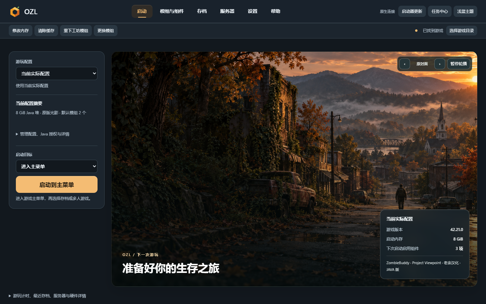

安装版
按向导选择目录，创建快捷方式；附带卸载工具。
Windows x64
下载安装版 ↓ GitHub 备用下载 ↗功能介绍

预览图片加载失败
启动前选好配置和目标，不用每次重新整理模组。
开始使用
按向导选择目录，创建快捷方式；附带卸载工具。
Windows x64
下载安装版 ↓ GitHub 备用下载 ↗完整解压到独立文件夹，保留全部文件后运行。
Windows x64
下载免安装版 ↓ GitHub 备用下载 ↗适用于 Windows x64，需要已安装游戏及 WebView2 Runtime。OZL 不包含游戏或第三方模组本体。